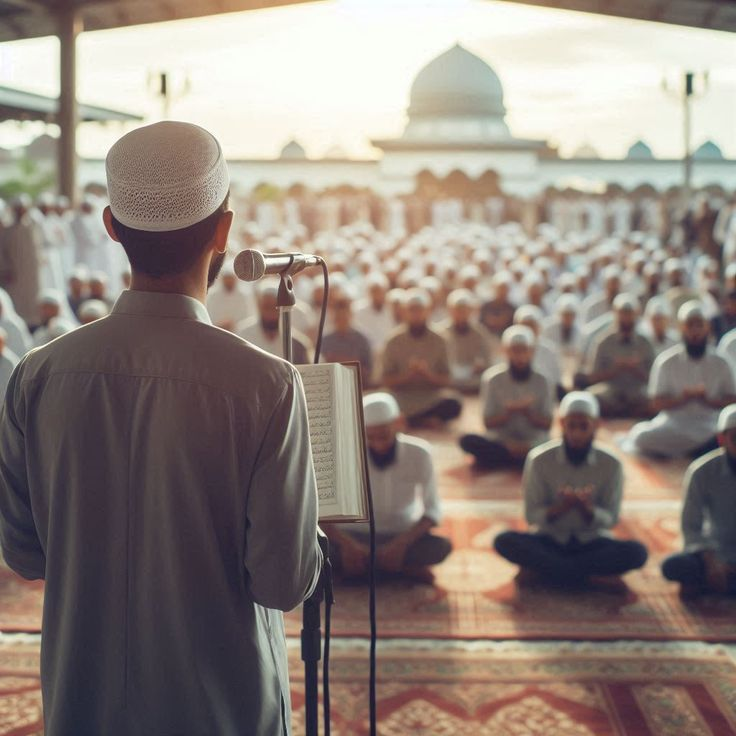

Program & Kegiatan
Kami mendesain rutinitas harian yang padat namun menyenangkan untuk membentuk kedisiplinan santri.

Kajian Kitab Kuning
Pendalaman ilmu Fiqih, Aqidah, dan Tasawuf menggunakan referensi kitab turats klasik yang dikontekstualisasikan.

Muhadhoroh (Public Speaking)
Latihan pidato 3 bahasa (Arab, Inggris, Indonesia) setiap pekan untuk melatih kepercayaan diri.

Ekstrakurikuler Skill
Pilihan pengembangan diri: Panahan, Berkuda, Desain Grafis, Robotik, dan Jurnalistik.